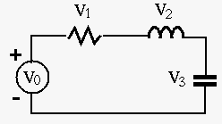
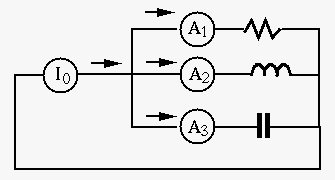
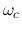
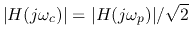
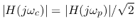
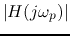
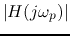
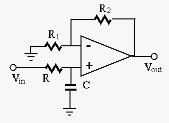

Find the frequency response function (FRF) of the circuit, and find the
cut-off frequency  of the filter in terms of the given circuit
parameters  , ,
, ,  and
and  , so that
, where
, so that
, where  is the
frequency at which
 reaches maximum.
is the
frequency at which
 reaches maximum.
